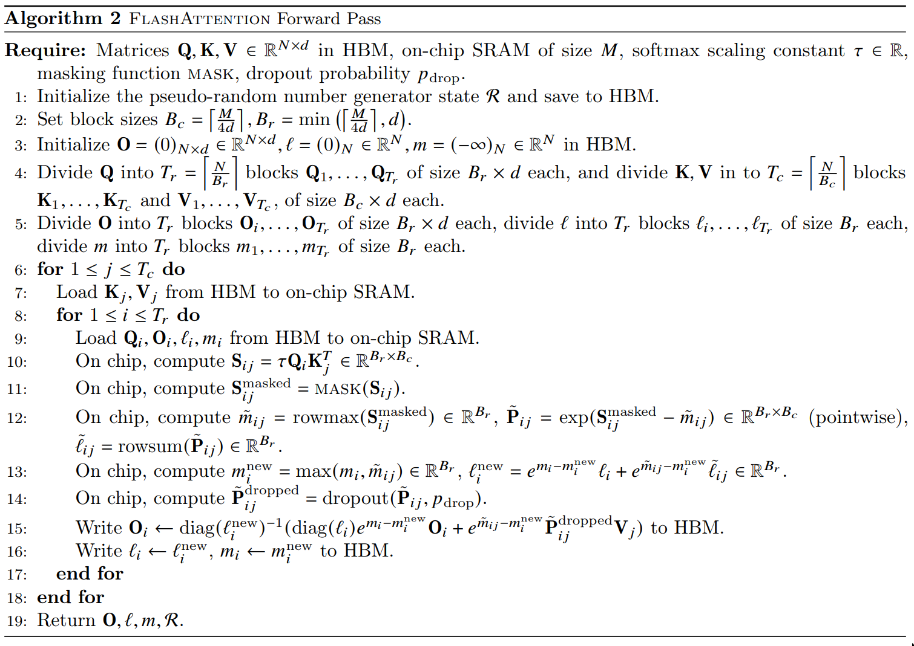

How can we split up the softmax computation to make it faster for flash attention?
We know that Q,K,V∈Rn×d
S=QK⊤∈RN×N
Original Algorithm
For each element:
sum(exp(S−max))exp(S−max)V
Full matrix representation:
⎣⎢⎢⎢⎢⎢⎢⎢⎢⎡(sum(exp(S1,:−max))exp(S11−max))(1,1)(sum(exp(S2,:−max))exp(S21−max))(2,1)⋮(sum(exp(S3,:−max))exp(Sm1−max))(m,1)(sum(exp(S1,:−max))exp(S12−max))(1,2)(sum(exp(S2,:−max))exp(S22−max))(2,2)⋮(sum(exp(S3,:−max))exp(Sm2−max))(m,2)⋯⋯⋱⋯(sum(exp(S1,:−max))exp(S1n−max))(1,n)(sum(exp(S2,:−max))exp(S2n−max))(2,n)⋮(sum(exp(S3,:−max))exp(Smn−max))(m,n)⎦⎥⎥⎥⎥⎥⎥⎥⎥⎤V
(SEQ_LEN×SEQ_LEN)⋅(SEQ_LEN×D_MODEL)
- Softmax Algorithm (for each (query) row, each row can be done in parallel)
- Compute row-max value of S. (1 loop over row of S)
- Compute denominator summing over eS−max. (1 loop over row of S)
- For each value of row of S, use denominator to compute softmax, just the original formula. (1 loop over row of S)
- Multiply by V.
Flash Attention
Let's look at just the first row, since each row can be done in parallel:
[(sum(exp(S1,:−max))exp(S11−max))(1,1)…(sum(exp(S1,:−max))exp(S12−max))(1,2)…⋯…(sum(exp(S1,:−max))exp(S1n−max))(1,n)…]V
=[(sum(exp(S1,:−max))exp(S11−max))(1,1)…(sum(exp(S1,:−max))exp(S12−max))(1,2)…⋯…(sum(exp(S1,:−max))exp(S1n−max))(1,n)…]⋅⎣⎢⎢⎢⎢⎡V1V2⋮Vn⎦⎥⎥⎥⎥⎤
=[(sum(exp(S1,:−max))exp(S11−max))(1,1)⋅V1+(sum(exp(S1,:−max))exp(S12−max))(1,2)⋅V2+⋯+(sum(exp(S1,:−max))exp(S1n−max))(1,n)⋅Vn…]
=[(sum(exp(S1,:−max))exp(S11−max)V1)(1,1)+(sum(exp(S1,:−max))exp(S12−max)V2)(1,2)+⋯+(sum(exp(S1,:−max))exp(S1n−max)Vn)(1,n)…]
=sum(exp(S1,:−max))1⋅[(exp(S11−max)V1)(1,1)+(exp(S12−max)V2)(1,2)+⋯+(exp(S1n−max)Vn)(1,n)…]
Therefore, we can compute:
- The denominator or normalization factor separately
- Use partial Vi to compute the partial output
- This can be batched, so we're computing multiple rows of S at once
- Implies that we'll be batching multiple rows of V at once as well
To compute O, we compute the row-wise normalization factor L of S.
O=expSV∈RN×d
O=exp(QKT)V∈RN×d
⟹exp(L)O
Flash Attention Algorithm (for a single row):
- In a single loop (1 loop over row of S)
- Compute the row-max value of S.
- Update previous numerator partial sum and denominator normalization factor with new row-max
- Divide sum by denominator, results in a single scalar.
This algorithm can be batched:
- We're computing multiple rows of S of batch size B0 at once, resulting a vector of size B0.
- Other threads will compute other rows of S in parallel batches.
Why can we do this in a single loop while online softmax requires 2 loops?
The flash attention algorithm uses a reduction operation (multplies by V), so we can just keep adding our partial results to get to the final output.
In the below high level flash attention algorithm, do the dims match?
Initialization
Block size is 2, hence why we have 2x* matrices.
m0=[−∞−∞]
l0=[00]
Oq=[000000⋯⋯00]
Step i, i=1,2,…N
Sq,i=QqKiT
mi=max(rowmax(Sq,i),mi−1)
Pq,i=exp(Sq,i−mi)
Oq=diag(exp(mi−1−mi))Oq+Pq,iVi
ℓi=ℓi−1exp(mi−1−mi)+rowsum(exp(Sq,i−mi))
Step N+1
Oq=[diag(ℓu)]−1Oq
Initialization
Block size is 2, hence why we have 2x* matrices.
m0=[−∞−∞]
l0=[00]
Oq=[000000⋯⋯00]⟹2×128 matrix, row(s) at index q
Step i, i=1,2,…N
- We iterate for all key vectors KiT.
- For given query row indexed by q.
Attention score:
Sq,i=QqKiT
2×2=(2×512)⋅(512×2)
Maximum (row-wise):
mi=max(rowmax(Sq,i),mi−1)
2×1=max(rowmax(2×2),2×1)
Numerator:
Pq,i=exp(Sq,i−mi)
2×2=exp(2×2−2×1)
Output vector:
We're adjusting the previous Pi−1 with the new maximum.
diag(exp(mi−1−mi))Oi−1=diag(exp(mi−1−mi))Pq,i−1Vi−1
Oq=diag(exp(mi−1−mi))Oq+Pq,iVi
2×128=diag(exp(2×1−2×1))⋅(2×128)+(2×2)⋅(2×128)
Denominator:
ℓi=ℓi−1exp(mi−1−mi)+rowsum(exp(Sq,i−mi))
2×1=2×1exp(2×1−2×1)+rowsum(exp(2×2−2×1))
Step N+1
Inverting a diagonal matrix returns a matrix where the diagonal elements are reciprocals of the original diagonal elements (A⋅A−1=I).
We do this to normalize the output by dividing by the sum of the attention weights.
Oq=[diag(ℓu)]−1Oq
2×128=[diag(2×1)]−1⋅(2×128)
In triton, how many threads are we running in parallel?

Original number of threads: BATCH_SIZE x NUM_HEADS x SEQ_LEN
With batching:
- BATCH_SIZE x NUM_HEADS x (SEQ_LEN / BLOCK_SIZE_Q)
- BATCH_SIZE x NUM_HEADS x NUM_BLOCKS_Q
- Since: NUM_BLOCKS_Q = SEQ_LEN / BLOCK_SIZE_Q
- If BLOCK_SIZE_Q = 1, then BATCH_SIZE x NUM_HEADS x SEQ_LEN
grid = lambda args: (
triton.cdiv(SEQ_LEN, args["BLOCK_SIZE_Q"]),
BATCH_SIZE * NUM_HEADS,
1,
)
Log Sum Trick 2
m_i += tl.math.log(
l_i
)
softmax(xi)=exp(xi−mi−log(li))
=exp(log(li))exp(xi−mi)
=liexp(xi−mi)
So we can store a single value to compute the previous softmax for the backward pass.
Space complexity analysis on flash attention vs standard attention?
We know that Q,K,V∈Rn×d
S=QK⊤∈RN×N
Standard attention: O(N2d)
- Each query and key is of size d
- There are N queries and N keys
- So there are N2 attention scores
- So the space complexity is O(N2⋅d)
Flash attention: O(Nd)
- Each query and key is of size d
- There are N queries and N keys
- But we compute row-wise across the attention matrix
- So we only store 1 scalar value for each query
- So the space complexity is O(N⋅d)